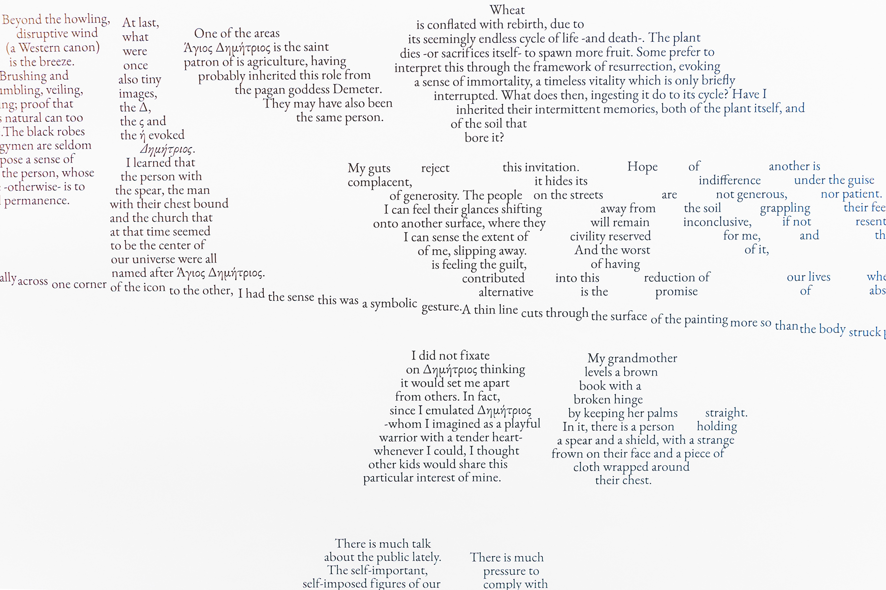
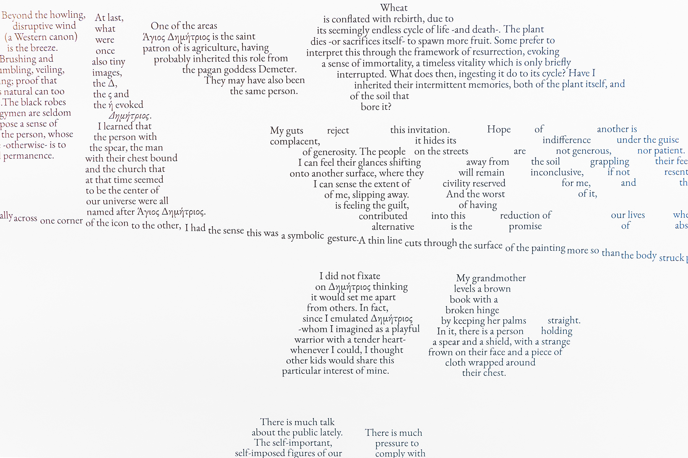
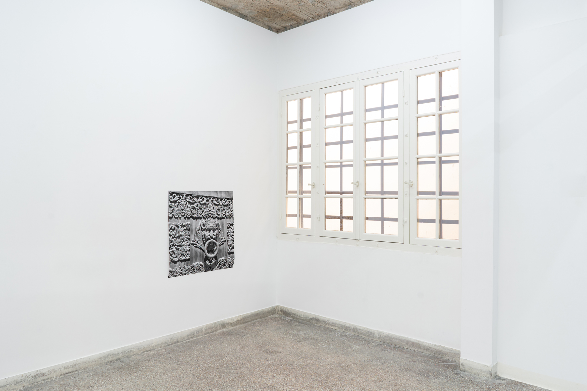
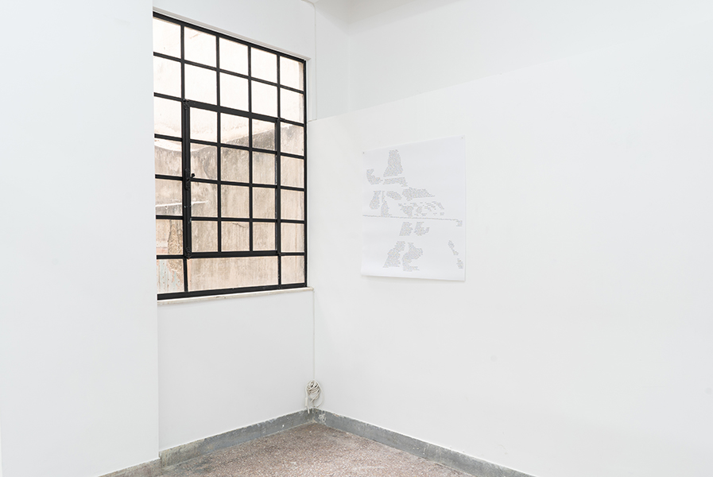
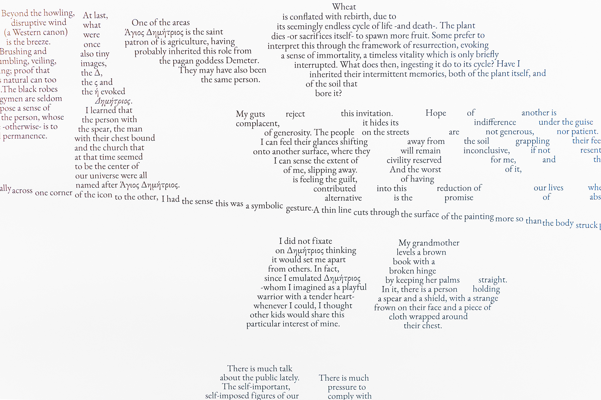
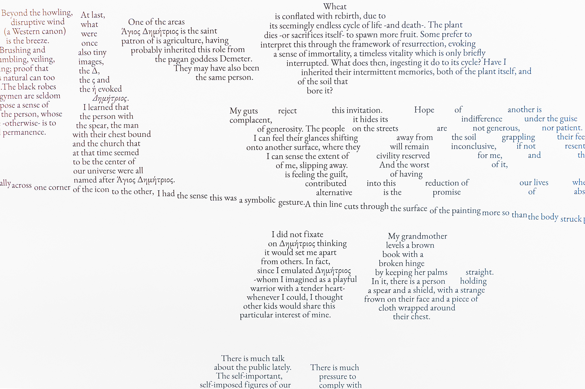

prints on paper in variable sizes
photo credit: Alexandra Masmanidi
Dimitri’s Binder is a story that unfolds in the form of a map. The narrative centers on the neighbourhood of Tatavla as it is experienced by Elenitsa, a part-fictional part-historical figure whom Marina first encountered in a 1942 article featured in the Apoyevmatini:
“This year, the carnival ended in a sad mood. (...) At the Ararat Gazino, both the teacher from Pera who had been an avid customer of the carnival festivities for 45 years, and powdered Elenitsa were absent.”
The carnival in question is Baklahorani, a masked parade which evoked in Marina a curiosity about the possibilities disguising oneself may have offered in 19th + 20th centuries. The text is an exploration of the changing landscape of Tatavla, literally: as its gardens + agricultural practices + rituals + landmarks are lost, and ephemarally: through its communities whose traditions + rituals + stories + sensibilities wither.
Elenitsa interprets images + instances + habits + patterns, both fictional and real, with a particular interest in constituting trans narratives through a textual reading of minor evidence + speculation + hearsay.